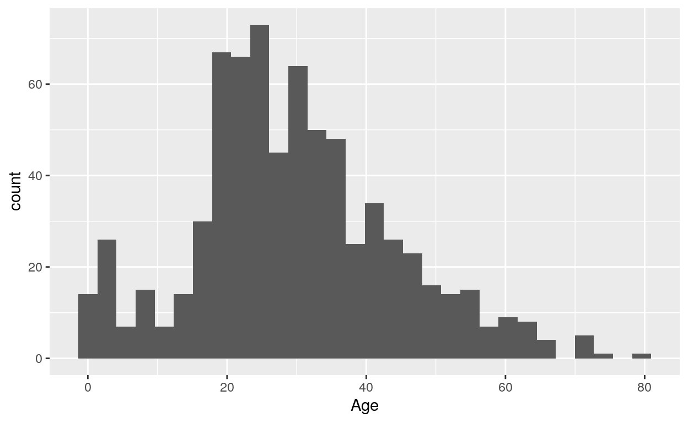

Exploratory Data Analysis
Loading the libararies and dataset
Titanic is an R package containing data sets providing information on the fate of passengers on the fatal maiden voyage of the ocean liner “Titanic”.
Load the dataset and libraries.
library(titanic)
library(tidyverse)For pre-processing, we need to convert the variables Survived and Pclass to factor variables.
titanic_train$Survived<-factor(titanic_train$Survived)
titanic_train$Pclass<-factor(titanic_train$Pclass)Exploring the dataset
Glimpse the dataset.
glimpse(titanic_train)Here is the description of the variables:
- survival: Survival (0 = No; 1 = Yes)
- Pclass: Passenger Class (1 = 1st; 2 = 2nd; 3 = 3rd)
- name: Name of passenger
- sex: Gender of passenger
- age: Age of passenger
- sibsp: Number of Siblings/Spouses Aboard
- parch: Number of Parents/Children Aboard
- ticket: Ticket Number
- fare: Passenger Fare (British pound)
- cabin: Cabin
- **embarked: Port of Embarkation (C = Cherbourg; Q = Queenstown; S = Southampton)
head function.
head(titanic_train)Use the summary() function to view the summary statistics on the dataset.
summary(titanic_train)Contingency Table
The table is a basic summary statistics function in R which counts the occurrence of each value in a vector.
table(titanic_train$Sex) Question: In the training set, how many male passengers are there? Execute the following code to find out the answer.
Answer: 577.
We can send the output of the table command to prop.table() to compute the proportion.
t<-table(titanic_train$Sex)
prop.table(t)Complete the following code to find out the proportion of passenger survived.
t<-table(titanic_train$Survived)
prop.table(t)What is the proportion of survivors?
Answer (round to 2 decimal places): 0.62
Charts
Create a bar chart to show the distribution of male/female passengers.
ggplot(titanic_train,aes(x=Sex))+
geom_bar() Compute the proportion of survivors grouped by Gender by completing the following code.
t<-table(titanic_train$Sex,titanic_train$Survived)
prop.table(t)Question: Is Male or Female passenger more likely to survive?
Answer:
Create a bar chart to visualize the results.
ggplot(titanic_train,aes(x=Sex,fill=factor(Survived)))+
geom_bar()Exercise 1
Create a bar chart to show the distribution fo the different classes of passengers
ggplot(titanic_train,aes(x=Pclass))+
geom_bar() Complete the following code to plot a bar chart with x-axis being Pclass grouped by Survived.
ggplot(titanic_train,aes(x=Pclass,fill=factor(Survived)))+
geom_bar(position="dodge") Question: Does passenger class affects the probability of survival?
Answer: There are higher probability of survival in class 1. The probability of survival is lowest in class 3.
Missing values
Let’s plot the histogram for showing age distribution.
ggplot(titanic_train, aes(x=Age)) +
geom_histogram()## `stat_bin()` using `bins = 30`. Pick better value with `binwidth`.## Warning: Removed 177 rows containing non-finite values (stat_bin).
To compute the average age of the passenger, execute
mean(titanic_train$Age)Since there are missing values in the age attributes, you can not directly compute the average of the age attribute. We can use the option na.rm = TRUE to ignore the missing values (NA) when computing the mean.
mean(titanic_train$Age, na.rm = TRUE)Missing values are ubiquitous in data and need to be carefully explored and handled in the initial stages of analysis. To examine the number of rows of missing values for each attribute, you may execute
colSums(is.na(titanic_train))We can use the visdat package to visualize the missing values. vis_dat visualises the whole dataframe at once, and provides information about the class of the data input into R, as well as whether the data is missing or not.
library(visdat)
vis_dat(titanic_train)## Warning: `gather_()` was deprecated in tidyr 1.2.0.
## Please use `gather()` instead.
## This warning is displayed once every 8 hours.
## Call `lifecycle::last_lifecycle_warnings()` to see where this warning was generated.
One way to to handle missing values is to replace them with the mean age of passengers.
avg<-mean(titanic_train$Age, na.rm = TRUE)
titanic_train$Age[is.na(titanic_train$Age)] = avgVerify that there are no more missing values.
colSums(is.na(titanic_train))## PassengerId Survived Pclass Name Sex Age
## 0 0 0 0 0 0
## SibSp Parch Ticket Fare Cabin Embarked
## 0 0 0 0 0 0vis_dat(titanic_train)
Adult or Child
The attribute Age is a continuous variable which makes drawing proportion tables almost useless as there may only be one or two passengers for each age! Let’s create a new variable Child to indicate whether the passenger is below the age of 18.
titanic_train$AgeCategory <- "Adult"
titanic_train$AgeCategory[titanic_train$Age < 18] <- "Child"Check the numebr of of children and adults in the dataset.
table(titanic_train$AgeCategory)survival for Child and Adult.
ggplot(titanic_train,aes(x=AgeCategory,fill=factor(Survived)))+
geom_bar(position="dodge") Question: Is Child or Adult more likely to survive?
References
- https://cran.r-project.org/web/packages/explore/vignettes/explore_titanic.html
- https://rolkra.github.io/explore-count-data/
- https://cran.r-project.org/web/packages/DataExplorer/vignettes/dataexplorer-intro.html
- https://www.youtube.com/watch?v=Zx2TguRHrJE&list=PLLSmf_EmjdvTiXrtivMJA63SR7yhxgTic&index=5&t=792s
- https://www.youtube.com/watch?v=GSk-EEu1zkA&list=PLLSmf_EmjdvTiXrtivMJA63SR7yhxgTic&index=3&t=573s
- https://trevorstephens.com/kaggle-titanic-tutorial/getting-started-with-r/